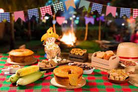
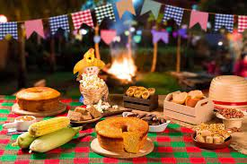

Informações do Evento
Data: 08 de Julho 2025
Horário: A partir das 18h
Local: No colégio do Barbosa Ferraz - PR
Fotos do Arraial
 


Sobre o Evento
O tradicional Arraia do Colégio Barbosa Ferraz é um dos eventos mais esperados da região, reunindo cultura, música, dança e gastronomia típica das festas juninas.
Neste ano teremos:
- Apresentações de quadrilha
- Concurso de trajes
- Barracas de comidas típicas
- Jogos e brincadeiras
- Baladinha